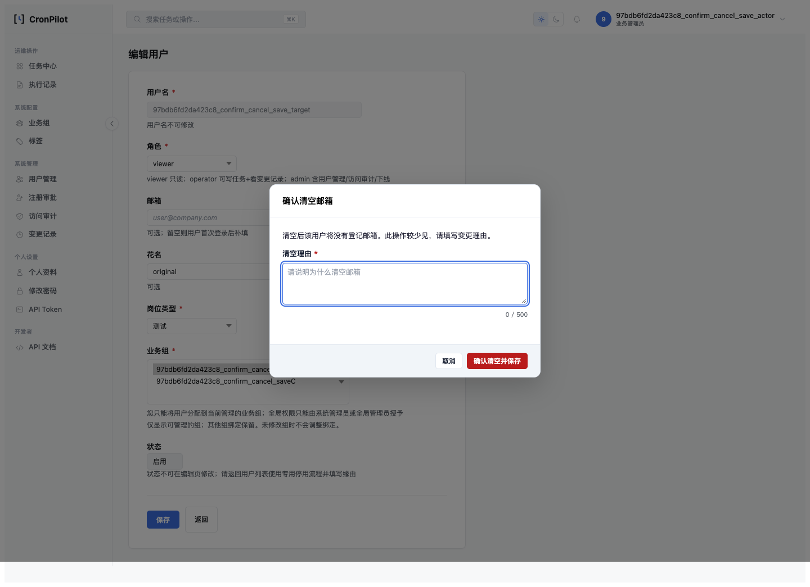
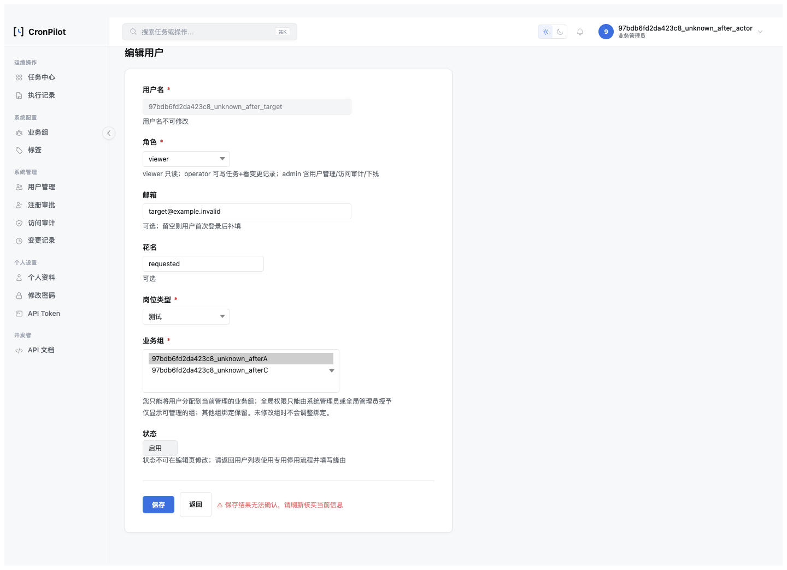
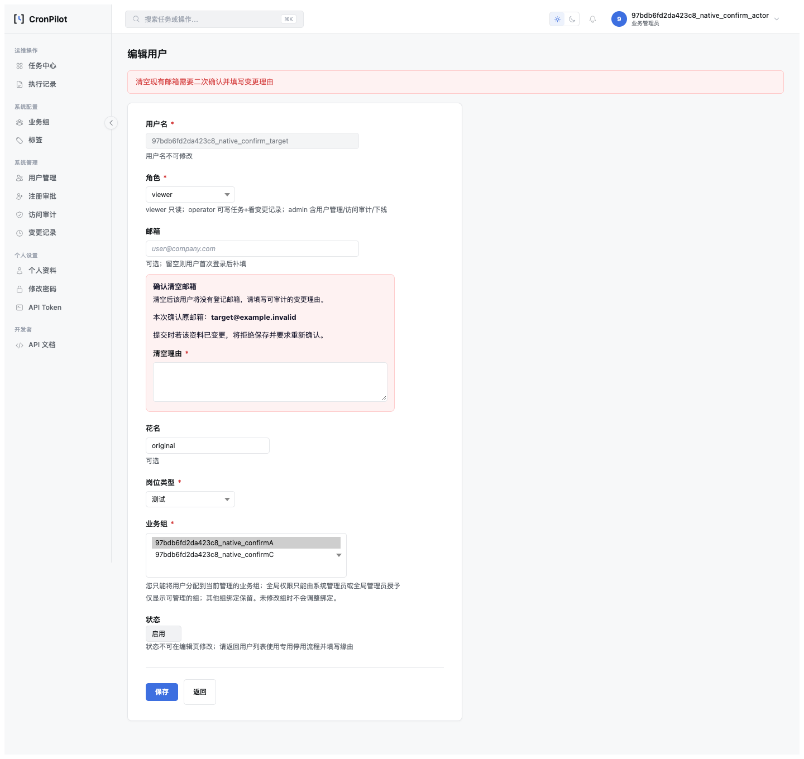

RBAC 用户编辑七状态浏览器验收（2026-10-30）
日期：2026-10-30 · 状态：确认设计B1–B3实施完成；F2七状态证据与F3成本表述校准关闭。 本批不修改生产业务、页面或锁协议，不宣称全仓事务治理完成。
设计：七状态与锁成本校准设计 §10；七项复盘。
1. 实际执行环境与范围
独立进程内Flask测试服务、随机回环端口、sqlite:///:memory:、StaticPool、逐请求run_id哨兵；CSRF_BYPASS_IN_TESTING=False。浏览器为本机Chrome 155.0.8059.80，使用Playwright、真实模板与公共JS。受限Biz Admin管理A/C、目标A+B，补非种子全局管理员和Operator/Viewer反向路径。账号密码随机生成，仅存在内存，不交付密码。未连接5001开发服务进行故障注入。
故障注入只绑定当前服务调用的具体Session：真实flush有DML后异常、commit调用前异常、真实commit完成后异常。所有注入只命中一次并恢复；recovery场景后续真实保存成功。prepared concurrent写入由第二个真实管理员会话通过现有入口完成，计数在其后重新开始；它不是同时争锁实验。
2. 七状态核心结论
- UPDATED：真实保存，一次提交、一次成功审计，资料-only不触碰关系/Token/认证版本/缓存。
- NO_CHANGE：正常页面零POST；独立的浏览器同源构造POST验证服务端no_change、零写。两种证据不互相替代。
- CONFIRM_REQUIRED：正常模态取消零POST，确认后才保存；解除preflight的专门兜底例得到真实confirm_required并由公共JS打开模态。原生POST保留T0及空邮箱输入，填理由后第二次提交成功。
- ALREADY_APPLIED：另一管理员已提交相同目标；主浏览器基于旧T0提交，留页提示、零重复DML/成功审计/授权副作用。
- CONFLICT：O/C/R互异且带另一个意图字段，整次拒绝、不部分保存；Ajax留页，原生PRG读当前值。
- FAILED：自定义岗位空值/原生空岗位在服务端拒绝；真实flush后异常已产生SQL但业务与审计一起回滚。输入错误没有强求outcome事件。
- COMMIT_UNKNOWN：提交前异常无持久化；提交完成后异常业务及同事务审计保留；页面都提示“保存结果无法确认”，不自动重试。授权子例版本只+1，缓存只失效一次。原生POST对应PRG通过。
UPDATED/部分FAILED沿用通用响应，没有人为补写data.outcome；results.json以outcome_present区分缺键。每个恢复型Ajax结果先检查原按钮disabled/loading恢复，再刷新建立当前基线并点击no-op，证明可继续操作；unknown不直接盲目重试。
3. 逐场景结果（runner生成）
27项全部通过，无skip；30张脱敏截图。完整JSON · 命令与输出。每项记录网络计数、实际响应、事件、业务差异、审计、认证版本、关系DML和缓存行为；凭据只比较布尔差异。
updated：updated；actual_button；通过。no_change：no_change；actual_button；通过。no_change_server：no_change；browser_fetch；通过。confirm_cancel_save：updated；actual_button；通过。confirm_server：confirm_required；actual_button；通过。already_applied：already_applied；actual_button；通过。conflict：conflict；actual_button；通过。failed_field：failed；actual_button；通过。failed_flush：failed；actual_button；通过。unknown_before：commit_unknown；actual_button；通过。unknown_after：commit_unknown；actual_button；通过。unknown_after_auth：commit_unknown；actual_button；通过。recovery：updated；actual_button；通过。global_updated：updated；actual_button；通过。global_no_change：no_change；actual_button；通过。scope_denied：access_denied；access_control；通过。operator_denied：access_denied；access_control；通过。viewer_denied：access_denied；access_control；通过。native_no_change：no_change；native；通过。native_confirm：updated；native；通过。native_updated：updated；native；通过。native_already_applied：already_applied；native；通过。native_conflict：conflict；native；通过。native_failed：failed；native；通过。native_unknown_before：commit_unknown；native；通过。native_unknown_after：commit_unknown；native；通过。csrf_denied：failed；browser_fetch；通过。
4. 关键截图
以下均来自受限Biz Admin的实际页面，其他状态截图位于同一证据目录。
正常清空确认（取消前）

真实提交完成后，应用仍提示结果未知

原生POST保留输入和确认理由入口

5. 验收命令与自证
.venv-py311/bin/python scripts/verify_user_edit_outcomes_browser.py --output-dir /private/tmp/rbac-outcomes-complete --executable-path '/Applications/Google Chrome.app/Contents/MacOS/Google Chrome' RBAC_OUTCOMES: OK cases=27 isolated_memory=1 seven_states=1 .venv-py311/bin/python -m unittest tests.test_user_edit_browser_harness_guard tests.test_user_edit_change_set tests.test_user_edit_scope_projection tests.test_ajax_form_guard -q Ran 64 tests in 55.617s — OK .venv-py311/bin/python scripts/verify_user_edit_group_preflight.py --executable-path '/Applications/Google Chrome.app/Contents/MacOS/Google Chrome' USER_EDIT_GROUP_PREFLIGHT: OK cases=18 .venv-py311/bin/ruff check app/ scripts/user_edit_browser_harness.py scripts/verify_user_edit_outcomes_browser.py tests/test_user_edit_browser_harness_guard.py All checks passed!
64项含11项新工具守卫；非内存URI在初始化engine前拒绝；缺/重复/skip/失败case拒绝；未命中和多次命中注入拒绝；异常后方法恢复；真实commit后抛错仍持久化；工厂真实登录与CSRF；拒绝覆盖非空证据目录，避免旧绿色结果冒充新执行。
6. 用户复验
- 无需登录即可打开本页，检查七状态与JSON一致，UNKNOWN的两组持久化结果不同。
- 检查三张嵌入截图，确认真实模态、未知提示和原生回显均存在。
- 重放时把上方命令的--output-dir替换为一个新的空目录；密码/账号由工具自动准备，不需要开发账号。
- 预期输出cases=27、seven_states=1，进程结束后检查新目录results.json为passed且含27个唯一case_id；程序自动关闭自己拥有的临时服务，5001服务保持可用。
7. 限制与成本校准
SQLite用于页面和应用结果验证，不等于MySQL物理锁/间隙锁或网络断连测试；真实MySQL锁释放仍依F1证据。commit-after是可控应用层确认丢失模拟，不证明所有网络故障组合。F3已在父设计rev.2.8 §7注明管理员降权扩展锁集合，未改锁算法或给出未经测量的性能保证。
本批只改测试工具/测试/文档，按已确认设计§6不重启或改动开发业务服务；开发数据库表完整性已检查。文档最终同步与可达性门禁结果见复盘。